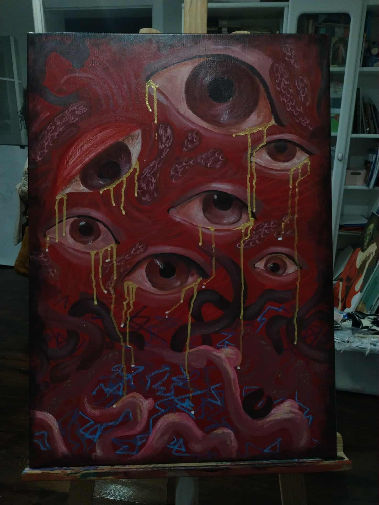
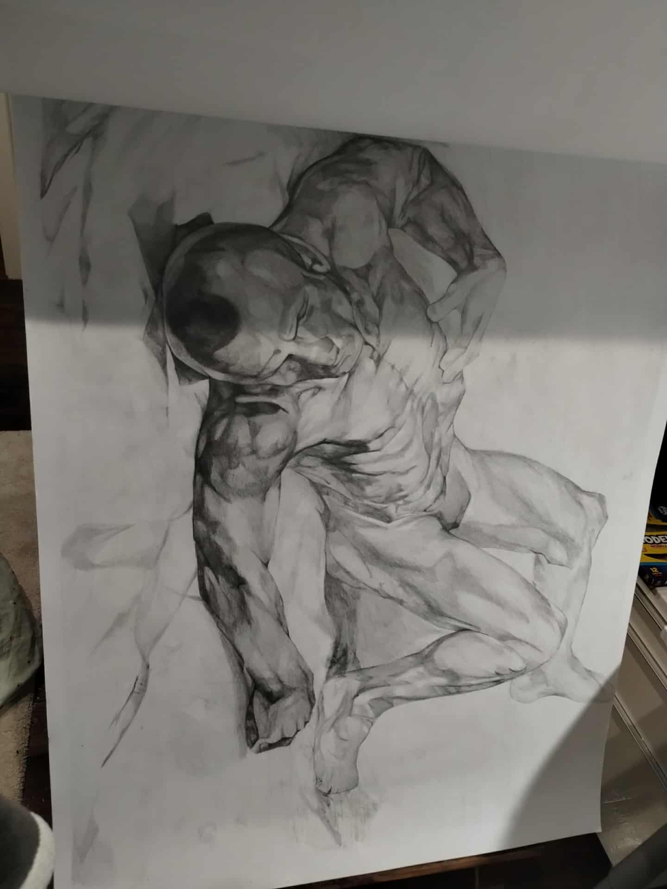
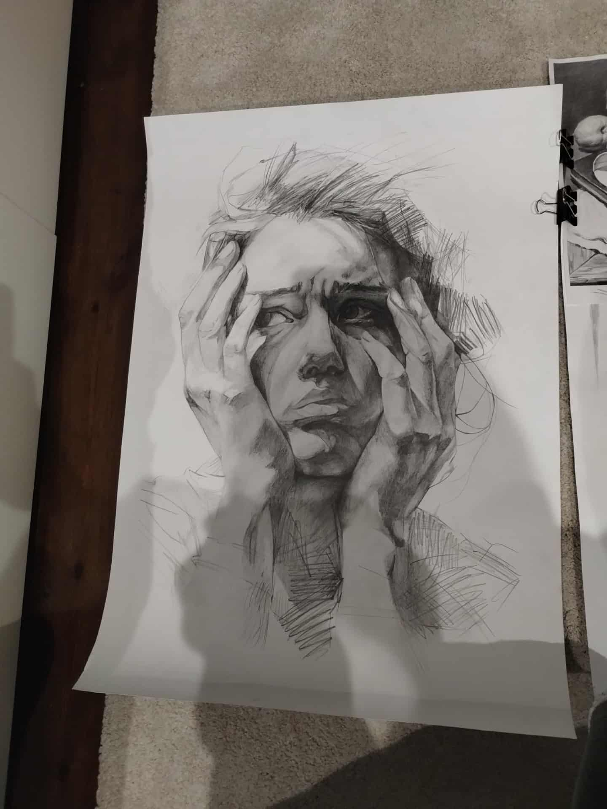
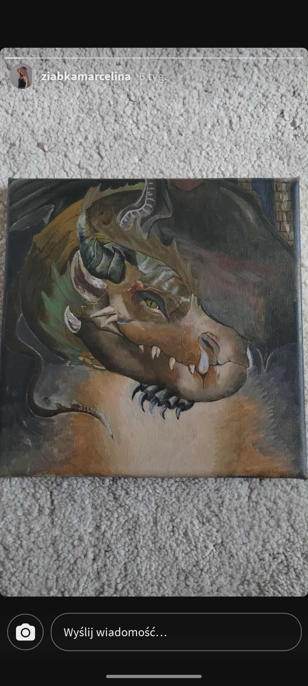
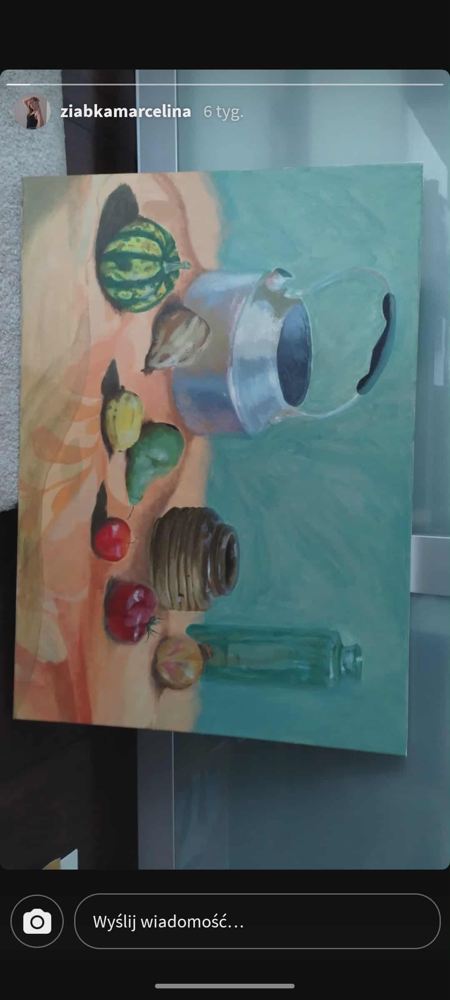

Ale te obrazy są kurde zajebiste, wolałem to jeszcze raz tutaj podkreślić. Szczerze mało cię znam i nie wiem jaka forma wiadomości dotrze do ciebie. I czy nie roześlesz tego żeby się nie pochwalić znajomym co dostałaś. Nie wiedziałem jakie dać tło więc proszę bardzo tło gejowo przyjazne. Zamieściłem tutaj kilka twoich malunków które mi się bardzo spodobały. W tym malunku czuję nutkę nawiązania do Berserka ale raczej może mi się wydawać.

Fajnie było by tu napisać coś nieco bardziej filozoficznego ale aktualnie mam mentalny breakdown podczas robienie tego 😃, a lubię wyzwania a przypomnienie sobie jak się robiło front-end bardzo mi się przyda. Tak mnie naszło, czy osoby artystyczne są naprzykład bardziej wrażliwe na poezje i sztukę?

Boże ale ten rysunek jest dojebany!!!! Szkoda że to jest bardziej list niż konwersacja z tobą, mam dużo pytań a odnoszę wrażenie że jednak mogę cię nimi nieco przytłoczyć.

Dobra ale ten smok jest dojebany i samo to że jest dla mnie tak wielo warstwowy no po prostu cudo
Nie wiem czy nie podniecam się nim za bardzo. Czy poznając kogoś nie masz tak że chcesz pytać tą osobę o jej przeżycia doświadczenia i opinie?
Powiem ci że jestem zdania że po tym jakiej muzyki słucha dana osoba można określić jej charakter, czego ktoś czegoś słucha, z kim, i jak bardzo to do niej przemawia.

Ale też i różnorodność słuchanej muzyki może świadczyń o wszechstronności ale to tam.
Napisał bym ci co nieco o sobie ale podając wszystko na tacy zepsuję całą zabawę. Był kiedyś w twojej głowie pomysł rysunku/malunku który tak cię przytłoczył że nie ostatecznie go nie zrobiłaś?Mógłbym pisać i pisać ale co mi po tym jak to rozmowa z samym sobą. Jak byś się komuś tym chwaliła to powiedz to zawszę mogę urozmajcić stronę żeby było bardziej reprezentatywnie. Mam nadzieję że list się spodobał a fajnie było by cię zobaczyć uśmiechniętą.
Dodam jeszcze że lubię być nieprzewidywalny.
Zachęcam do kliknięcia w przycisk na dole 😋